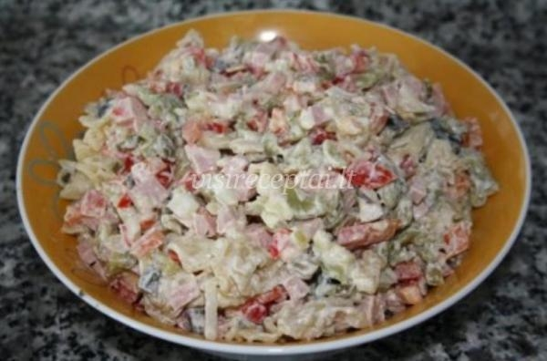

Dešra - kalorijų, naudingų savybių, naudojimas
 Katalogas vitaminų Pirmoji pagalba Diagnostikos metodai Maisto papildai Medicinos specialybių Maistas Maistas Plastinė operacija Rūkymas Diagnostikos metodai Medicina Kryptys Sporto Kategorijos Medicina Žmogaus organai Medicina Diagnostikos metodai Kaloringi produktai DefaultDešra
Dešra - maisto rūšis. Tai yra žemės jautienos (iš vienos ar daugiau rūšių mėsos) patalpintų pailgos lukštais.
Priklausomai nuo technologijos ir naudojamos žaliavos yra skirstomi į visas kraujo dešra, kepenų, pashtetnye, rūkyti (rūkyta), rūkytos ir virtos. Paprastai naudojama dešrų liesos mėsos, riebalų, druskos ir prieskonių. Pastaraisiais metais daugelis gamintojų vietoj sočiųjų riebalų rūgščių taukų pridedama prie rūkytų mėsos augalinių riebalų. Tai padidina naudingų savybių dešros.
Siekiant padidinti baltymų kiekį tuo kiaušinių, pieno baltymų, nenugriebto pieno arba gyvulių kraujo plazmos maltos pridėta. Siekiant pagerinti dešra naudojami česnakai, svogūnai, kmynų, kalendrų, kardamono, muskato, pipirų (saldus, juoda, raudona), o kartais net brendžio ar Madeiros skonis.
Kalorijų dešrelės
Įvairios dešros yra įvairių maistinių medžiagų ir turi skirtingas Kalorijų:
Virtos dešros yra 20 - 30% riebalų ir 10 - 15% baltymų. Jų energijos kiekis 200-300 kcal per 100 g produkto; Virti rūkyta dešra - 100 kalorijų, 0 g produkto 350-410 kcal. Virtos rūkytos dešros yra apie 17% baltymų ir apie 40% riebalų; Rūkyta dešra - yra laikoma viena iš labiausiai skanus ir maistingas. Juose yra 15-30% baltymų ir 57% riebalų. Kaloringu dešra yra 350-580 kcal 100, 0 g produkto.Privalumai dešrelės: Tiesa ar mitas?
Kalbėdamas apie dešrų išmokas žmonių mityba gali būti tik tada, jei šie produktai yra pagaminti iš aukštos kokybės mėsos ir natūralių prieskonių. Tačiau šiuolaikiniame dešros pridėjo labai daug įvairių stiprintuvų skonį, kvapą, spalvą. Daugelis iš jų atstovauja didelį pavojų sveikatai. Dėl pernelyg didelio suvartojimo dešros maisto gali išprovokuoti plėtrą įvairių ligų (podagra, cukriniu diabetu, hipertenzija, koronarinė širdies liga) rezultatas kepenų ir inkstų, ir kai konservantų rezultatas net turi galimybę sukelti susidarymą žmogaus vėžinių ląstelių.
Be to, dešra yra daug riebalų. Tai taip pat nėra labiausiai naudinga funkcija dešros, nes pernelyg riebalų vartojimas veda prie nutukimo, hipertenzijos vystymąsi, nusėdimo ant kraujagyslių cholesterolio plokštelių, ty sienos į aterosklerozės vystymąsi.
Kaip pasirinkti dešra?
Manoma, kad labiausiai naudinga dešra dešra pagaminta iš kalakutienos. Tai yra dėl to, kad joje yra bent minimalią riebalų ir prieskonių.
Nurodykite dešra, atkreipti ypatingą dėmesį į jos spalvą. Pinker nei jis yra, daugiau gamintojas buvo įtraukta į natrio nitrito įdaru. Mažas šio medžiagos nesukelia didelę žalą žmogaus organizmui, bet pasakyti tą patį iš didelėmis dozėmis nitratų negali būti!
Dešros yra greitai gendantis produktas. Todėl jas pirkti, visada domina tinkamumo laikas nurodytas produktas. Jei nėra etiketė nurodo pagaminimo ir galiojimo laiko pabaigos data, būtina atsisakyti dešros pirkimo.
Jūs taip pat turėtumėte paklausti ir kalorijų nusipirkau dešros, taip pat jo turinį riebalų. Patartina rinktis mažai kalorijų veislių.
Naudinga savybės dešros yra tik tie produktai pagaminti visiškai laikantis svečiams. Tačiau, šie produktai yra labai brangūs, o kartais net brangiau mėsos priemoka. Ir dešros naudą ir žalą likusi nėra palyginami tarpusavyje! Todėl, jų naudojimas maisto, ypač dideliais kiekiais, turėtų būti nutraukta, ir pakeistas su natūraliu dešros mėsos.